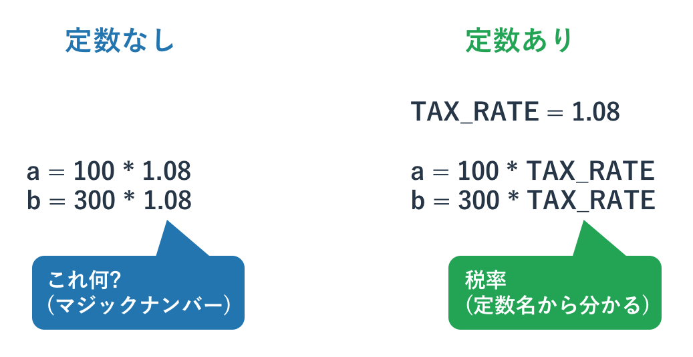

モジュール
本記事の内容
Pythonのプログラムは書けば書くほど大きくなります。 数百行のコードでしたらひとつのファイルに書けないことはないですが、 何千行にもなってくるとコードを複数のファイルに分けたほうが管理はしやすいです。 これは日常生活の整理整頓とまったく同じです。たとえば洋服ダンスがあるとすると、 それを使いやすく使うためには下着、シャツ、ズボンといった種類ごとに引き出しを分けて使うと思います。 ひとつの大きなダンボール箱にすべての服をつっこんでしまうとどこに何があるかわからなくなり、 なおかつ服もきれいに管理できずにシワシワになってしまいます。 プログラムのファイルを分けないと、後者のような乱雑な服の管理法に近い形でコードを書くことになります。 ひとつの大きなファイルのなかにさまざまなコードをゴチャゴチャと書くのでどこで何をやっているのかわからなくなってきます。
一方、特定の処理ごとにファイルを分けて「このファイルはXXの処理」「このファイルはYYの処理」などと整理すると、 XXの処理を追加したり修正したりする際にすぐに場所がわかります。 Pythonではこの「ファイルに分けられた各プログラム」のことをモジュールと呼んでいます。 既存のモジュールを使ったり、自分で新しくモジュールを使ってプログラムを書いていったりすることになります。
本章ではこのモジュールを使ったり、作ったりする方法について学びます。

まずはPythonが提供してくれているモジュールを利用することからはじめていきましょう。 モジュールを利用するには「import宣言」が必要です。 たとえば、数学処理がまとめられたmathモジュールを利用するには以下のようにします。
# import モジュール名 import math
このようにimportをすると、mathモジュールに入っている関数などが利用できるようになります。 たとえばmathモジュールの切り捨て関数を使うには以下のようにします。
>>> import math >>> math.floor(5.5) 5.0
モジュール内の関数を呼び出すには"モジュール名.関数()"とします。 math モジュールに含まれる関数であれば全て「math.関数名()」という形で呼び出します。 import されるモジュール名が長かったりわかりにくかったりする場合はそれに別名を付けることが可能です。 それは以下のように行います。
# import A as B # モジュール A を B として import import tkinter as tk font=('Helevetica', 32, 'bold') # 呼び出しは tk label = tk.Label(text='Hello Python', font=font, bg='red') label.pack() label.mainloop()
上記例では tkinter と呼ばれている GUI のモジュールを tk として import しています。
モジュールの関数を呼び出すたびに毎回モジュール名を書くのが面倒であれば「from」を使うことで、 モジュール内の関数をモジュール名なしで呼び出すことも可能になります。
# from モジュール名 import 関数名 from math import floor print(floor(5.5)) # 5
頻繁に使う関数であればこのように使用しても構いませんが、 一般的には from を使わずに import のみを行うほうが分かりやすいコードになります。 なぜならその関数がどのモジュールに属しているかひとめで分かるからです。
先ほどの 「import A as B」とこの from を組み合わせることで、 あるモジュールに属する関数を別名で使うこともできます。
# math モジュールの floor 関数 を f として import from math import floor as f print(f(5.5)) # 5
2つのモジュールが同名の関数を持っていて、2つとも使いたいといった場合に利用可能ですが、 そのような状況ではモジュール名ごと関数を書くほうが賢明かと思います。
モジュール内の関数すべてをモジュール名なしで呼び出すには以下のようにワイルドカードを使います。 ただ、このような乱雑なモジュールの利用法は「名前の衝突(同じ名前が２箇所で使われてしまっている)」 などの問題が発生しかねないので、あまり推奨できません。
>>> from math import *
あるモジュールをテストするといったシナリオでは有効な使い方ですが、 本番環境用のコードでは使用しないほうがよいです。
モジュールの作成
モジュールの作成は簡単です。本連載の最初に説明したように、 「.py」という拡張子をつけたファイルにpythonのコードを書くだけです。 モジュール名(ファイル名)はアルファベットの小文字と数字のみから構成されていることが望ましいとされていますが、 それに加えてアンダーバーを使うこともあります。 ここではモジュールutil.pyを作成し、それをmain.pyから呼び出す例を示します。 両ファイルは同じディレクトリで作成し、そのディレクトリ内でプログラムを実行してください。
#util.py def say_hello(): print('hello!') def say_python(): print('python!')
上記が呼び出される側の Python のプログラムです。2つの関数が定義されています。 そして以下がそれを呼び出す側の Python のプログラムです。
#main.py import util util.say_hello() util.say_python()
main.py を実行すると以下のような出力が得られ、 Python のプログラムのファイルが別の Python のプログラムのファイルを呼び出していることが分かります。
hello! python!
特別に難しいことはありませんね。
モジュールを書くにあたって注意すべきすることは、モジュールが以下の特性を持っているかということです。
- 再利用可能か
- 似た処理のみをまとめているか
たとえば標準ライブラリで提供されていない特殊な数値計算が必要なら、 その計算のためのモジュールを作ってもよいでしょう。 ただ、そこに特殊な文字列処理であったり、ネットワークの処理も書いたりするというのは誤った設計です。 数値計算のモジュールであればそれに徹するべきです。 文字列処理、ネットワークの処理についても同様です。 また、そのモジュールを誰しもが簡単に使えるようにすることが理想です。 例えばよくわからない名前の関数を作っていたり、変な副作用などがあったりすると扱いに困ります。 実際は複雑なプログラムを分割するためだけにモジュール化することも多いのですが、 それでも「使いやすい」ように書くことを心がけておくといいかもしれません。
なお、実行するプログラムからモジュールが見つからずにエラーとなることがたまにあります。 サンプルを試す際に「両ファイルは同じディレクトリで作成し、 そのディレクトリ内でプログラムを実行してください」とお願いしたのはこの問題を防ぐためです。 モジュールの探索には規則があり、それを知ることで別の場所にあるモジュールを読み込むこともできます。 ただ、それらは難しいため本書ではなく本シリーズの下編にて扱います。
モジュールのリロード
モジュールを開発している際にモジュールのコードを更新しても、 それを import している側は昔のコードのモジュールを保持し続けます。 新しいコードのものを参照して欲しい場合はそのモジュールを「リロード」することが必要で、 それは以下のように行います。
import imp imp.reload(モジュール名)
モジュール imp の reload という関数を使うことでモジュールのリロードができます。 実際に先ほど作成した util モジュール(util.py) を使いながらこの挙動を確認してみます。 インタプリタを起動しモジュールの関数を呼び出します。
>>> import util >>> util.say_hello() hello!
先ほど定義した通りの動きをしました。 この util モジュールのファイルを以下のように更新し保存します。
# util.py def say_hello(): print('hello!' * 3) def say_python(): print('python!' * 3)
モジュールのファイルを新しくしたあとで、 インタプリタで再度同じ関数を呼び出してみます。
>>> util.say_hello() hello!
出力を見てもらうと分かるように「昔の定義」のまま動いています。 試しにモジュールを再度 import し関数を呼び出してみます。
>>> import util >>> util.say_hello() hello!
再度 import をしても挙動は変わっていません。 次に先ほど紹介したモジュールのリロードを行い、関数を実行してみます。
>>> import imp >>> imp.reload(util) <module 'util' from '/Users/yuichi/Desktop/util.py'> >>> util.say_hello() hello!hello!hello!
出力を見ると分かりますが、モジュールが更新されていることが分かります。
本番環境でモジュールをリロードすることはあまりありませんが、 サーバープロセスなどにおいて動的に実行するコードを更新するといった目的にも使えるかもしれません。
モジュールの読み込みと実行
Python はモジュールを読み込む際に実行をしています。 そのため、先程までのような関数のみのモジュールを import しても全く影響はありませんが、 特定の処理をするコードを書くとそれが実行されてしまいます。 例えば以下の関数を定義しているモジュール util.py ですが、 これを import するだけで 4 行目が実行されて test と出力されてしまいます。
def test(): print('test') test()
そのため、モジュールとして読み込まれることを想定して開発された Python のプログラムファイルは、 実行されるコードを含まないべきです。 モジュールを読み込んだ際になんらかの初期化処理が必要な場合でも関数などとして提供するほうが行儀はいいです。 なぜなら import をする側は import をするだけで勝手になんらかの処理をすると想定していないからです。
ただ、モジュールがプログラムの起点になることもあれば import されることもあるという場合は、
「起点となる場合はある処理をする」一方、「モジュールとして呼び出される場合はそれをしない」
という実装が必要なことがあります。
これを実現するには特殊な変数
__name__
を使います。
これは特殊属性(詳細は本シリーズの下編にて扱います)と呼ばれる高度なトピックなのですが、
難しいことは考えずにこれにはモジュール名が入っていると認識して下さい。
たとえば util.py をモジュールとして読み込めば util となりますし、
testmodule.py を読み込めば testmodule となります。
ただし、一つ例外がありプログラムの起点となるプログラムは、
モジュール名がファイル名ではなく
__main__
となります。
せっかくなので実際に試してみます。 以下に3つのファイルがあるとします。
hello.py
import nice import world print('hello.py: ' + __name__)
nice.py
def fun_nice(): print('nice') print('nice.py: ' + __name__)
world.py
def fun_world(): print('world') print('world.py: ' + __name__)
コードを読んでもらえば分かりますが、hello.py は nice.py と world.py をimport しています。 nice.py 及び world.py はモジュールとして使われることを想定していますので、 簡単な関数の定義を持っています。 そしてそれらのファイルは最後にモジュール名のプリントをしています。 hello.py を起点に呼び出すと以下のような出力が得られます。
$ python3 hello.py nice.py: nice world.py: world hello.py: __main__
この際、 Python は以下の図のようにコードを読み込み、print 出力をしています。

出力を見てもらうと分かりますが、import されたモジュール内にある特殊変数
__name__
には、
ファイル名(モジュール名)が入っています。
ただ、起点となるファイルの
__name__
だけはファイル名ではなく
__main__
となっていることが分かります。
この
__name__
の性質を利用して、
そのモジュールが起点として呼ばれた場合のみ特定の処理をすることができます。
想像がつくかもしれませんが、以下のようなものとなります。
test.py
def fun_test(x):
return x**2
if(__name__ == '__main__'):
print('start function tests')
if(4 != fun_test(2)):
print('error')
if(9 != fun_test(-3)):
print('error')
上記のコードは name がもし main だった場合、 つまりこのモジュールが起点としてプログラムが起動された場合にモジュールで定義された関数をテストしています。 このモジュールが呼び出されるたびにいちいちテストをするのは問題ですが、 モジュールとして使われるプログラムを起点と呼び出した場合にだけテストをするというのは理にかなっています。 この書き方は様々なところで使われているので、ぜひ覚えておいて下さい。
モジュール紹介
Python には数え切れないほどのモジュールがあります。 モジュールには大きく分けて2つあり、標準モジュール、及び外部のモジュール(インストールなどが必要)があります。 有用なモジュールは多くあるのですが、 それらを多く語るのは本書の趣旨にそぐわないため下編に譲ります。 ここでは最重要なモジュールのみ駆け足で紹介します。
まず Python の環境自体に関わる sys モジュールがあります。 インタプリタとしての挙動に関わる関数を多く持ち、たとえば sys.exit() はプログラムを終了させます。 他には標準入出力や標準エラー出力を扱う機能も持っており、sys.stdin.read() や、sys.stdout.write(), そしてエラー出力の sys.stderr.write() があります。 改行なしの print 文を使いたい場合は改行をしないオプションを加える(後述します)か、 代わりに sys.stdout.write() を使うという方法があります。
import sys print('hello') print(' python') print('\n') sys.stdout.write('hello') sys.stdout.write(' python') print('\n')
上記コードを見てもらうと、同じ出力を print()と sys.stdout.write() で出力させています。 このプログラムを実行すると以下のような出力が得られます。
hello python hello python
出力を見てもらうと分かりますが、sys.stdout.write は出力後に改行されていません。 改行なしでコンソールに出力をしたい場合は使ってみて下さい。
次に OSに関わる処理として os モジュールがあります。 OS モジュールはちょうどターミナルや DOS Prompt、power shell のような、 シェルを使ったファイルやディレクトリの操作に近いことができます。 例えば以下のようなものとなります。
# 現在のディレクトリを取得
>>> os.getcwd()
'/Users/yuichi/Desktop'
# ディレクトリを移動
>>> os.chdir('test')
# ディレクトリの中身を確認
>>> os.listdir('./')
['.DS_Store', '1.txt']
# ディレクトリを作成
>>> os.mkdir('hello')
# ディレクトリを削除
>>> os.rmdir('hello')
os モジュールは子モジュールも持っており、たとえば os.path モジュールはパス関係の処理をできます。 他には時間関係の time モジュールや数学関係の math モジュールなどもよく利用されます。 それらの使い方の詳細は適時Python の公式ドキュメントなり、webサイトや書籍を参照してください。
Python のモジュールの数は膨大ですが、 プログラマが実現したい処理は一般的なことであればたいがいは既になんらかの形で提供されています。 どういうものがあるか手を動かしながら試し、 概観を掴んでしまえば簡単にそれらを利用できるようになるはずです。 ただ、提供されるモジュールやライブラリはPythonやプログラミングの最低限の知識を必要とする場合が多いです。 モジュールの詳細について学ぶ前に、 まずは Python やプログラミングの基礎知識を身につけることに注力するのがよいと思います。
 印刷する
印刷する